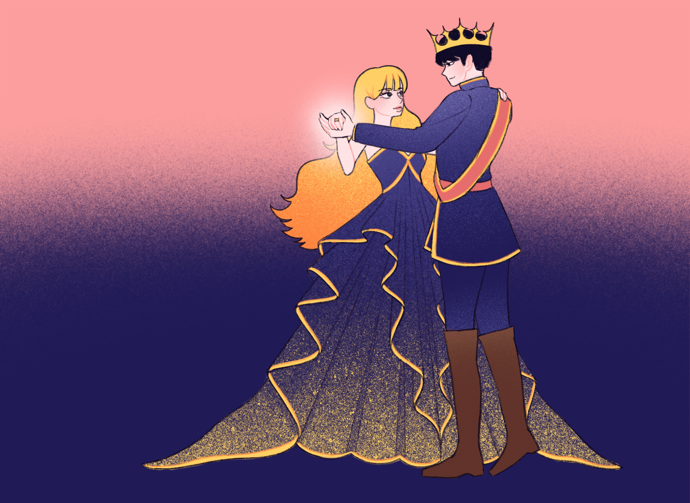

illustrated by Madi Kang
illustrated by Madi Kang

When the king gave a banquet for the third time, everything happened as before. But this time the cook said, "You are a witch, you furry animal, always putting something in the soup that makes it very good and taste better to the king." But because she asked, he allowed her to look in on the ball at the appointed time.
This time she put on the dress that glistened like the stars, and thus clothed she stepped into the hall. The king danced again with the beautiful maiden, thinking that she had never been so beautiful. And while he was dancing he placed a golden ring on her finger, without her noticing it. Further, he had ordered that this dance should last a long time.
When it was over, he tried to keep hold of her by her hands, but she tore herself loose and jumped so quickly into the crowd that she disappeared before his eyes.
She ran as fast as she could to her cubbyhole beneath the steps, but because she had stayed away too long, more than a half hour, she could not take off the beautiful dress, but instead just threw the fur cloak on over it. And in her haste she did not cover herself entirely with soot, and one finger remained white.